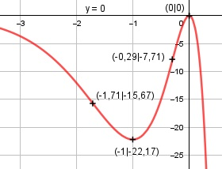

Aufgabe 142 f(x) = - 3 * x2 * e2x+4 Produktregel erste Ableitung: u = - 3x2, u' = -6x v = e2x+4 Kettenregel: v' = 2 * e2x+4 f'(x) = -6x * e2x+4 + 2 * e2x+4 * (-3x2) f'(x) = -6 * e2x+4 * (x2 + x) Produktregel zweite Ableitung: u = -6 * e2x+4 Kettenregel: u' = -6 * 2 * e2x+4 = -12 * e2x+4 v = x2 + x, v' = 2x + 1 f''(x) = -12*e2x+4*(x2 + x) + (2x + 1)*(-6)*e2x+4 f''(x) = e2x+4 * (-12x2 - 12x - 12x - 6) f''(x) = -6 * e2x+4 * (2x2 + 4x + 1) Produktregel dritte Ableitung: u = -6 * e2x+4 Kettenregel: u' = -6 * 2 * e2x+4 = -12 * e2x+4 v = 2x2 + 4x + 1, v' = 4x + 4 f'''(x) = -12 * e2x+4 * (2x2 + 4x + 1) + + (4x + 4) * (-6)*e2x+4 f'''(x) = e2x+4 * (-24x2 - 48x - 12 - 24x - 24) f'''(x) = -12 * e2x+4 * (2x2 + 6x + 3) Definitionsbereich: -∞ < x < ∞ Waagerechte Asymptote: f(x) = -3x2 * e2x+4 geht gegen 0 für x --> -∞ Wertebereich: f(x) wird dann am größten, wenn x = 0 (Extremum) f(0) = 0 --> -∞ < f(x) ≤ 0 Symmetrie zur y-Achse bzw. zum Punkt (0|0): f(-x) = -3 * (-x)2 * e2(-x)+4 f(-x) = -3x2 * e-2x+4 ≠ f(x) --> keine Achsensymmetrie -f(-x) = 3x2 * e-2x+4 ≠ f(x) --> keine Punktsymmetrie Nullstellen: f(x) = 0 -3x2 * e2x+4 = 0 |:e2x+4 -3x2 = 0 |:(-3) x2 = 0 |ⱱ x1,2 = 0 N(0|0) (Berührpunkt) Schnittpunkt mit der y-Achse: f(0) = -3 * 02 * e2*0+4 = 0 Sy(0|0) Extrempunkte: f'(x) = 0 -6 * e2x+4 * (x2 + x) = 0 |:e2x+4 -6 * (x2 + x) = 0 |:(-6) x2 + x = 0 x * (x + 1) = 0 x1 = 0, f(0) = 0 x + 1 = 0 | -1 x2 = -1 f(-1) = -3 * (-1)2 * e2*(-1)+4 = -22,17 f''(0) = -6 * e2*0+4 * (2 * 02 + 4 * 0 + 1) < 0 --> Hochpunkt (0|0) f''(-1) = -6*e2*(-1)+4*(2*(-1)2 + 4*(-1)+1) > 0 --> Tiefpunkt (-1|-22,17) Wendepunkte: f''(x) = 0 -6 * e2x+4 * (2x2 + 4x + 1) = 0 |:-6*e2x+4 2x2 + 4x + 1 = 0 |:2 x2 + 2x + 0,5 = 0 p, q - Formel p = 2, q = 0,5 x1,2 = x1,2 = -1 ± x1,2 = -1 ± x1,2 = -1 ± 0,71 x1 = -0,29 f(-0,29) = -3 * (-0,29)2 * e2*(-0,29)+4 = -7,71 x2 = -1,71 f(-1,71) = -3 * (-1,71)2 * e2*(-1,71)+4 = -15,67 f'''(-0,29) = -12 * e2*(-0,29)+4 * (2*(-0,29)2 + + 6 * (-0,29) + 3) ≠ 0 --> WP(-0,29|-7,71) f'''(-1,71) = -12 * e2*(-1,71)+4 * (2*(-1,71)2 + + 6 * (-1,71) + 3) ≠ 0 --> WP(-1,71|-15,67) Graph:
